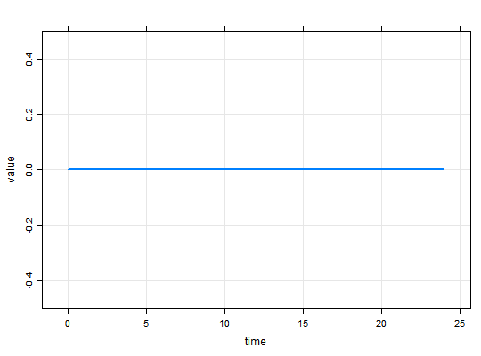
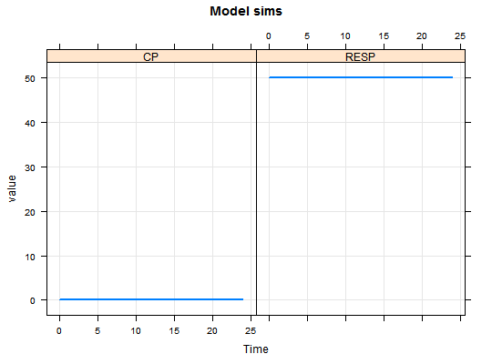

Methods for working with
These methods help the user view simulation output and extract simulated data to work with further. The methods listed here for the
most part have generics defined by R or other R packages. See the seealso section for other methods defined by mrgsolve
that have their own documentation pages.
# S4 method for mrgsims $(x, name) # S4 method for mrgsims tail(x, ...) # S4 method for mrgsims head(x, ...) # S4 method for mrgsims dim(x) # S4 method for mrgsims names(x) # S4 method for mrgsims as.data.frame(x, row.names = NULL, optional = FALSE, ...) # S4 method for mrgsims as.matrix(x, ...) # S4 method for mrgsims subset(x, ...) # S4 method for mrgsims summary(object, ...) # S4 method for mrgsims show(object)
Arguments
- x
- mrgsims object
- name
- name of column of simulated output to retain
- ...
- passed to other functions
- row.names
- passed to
as.data.frame - optional
- passed to
as.data.frame - object
- passed to show
Details
Most methods should behave as expected according to other method commonly used in R (e.g. head, tail, as.data.frame, etc ...)
subsetcoreces simulated output to data.frame and passes to subset.data.frame$selects a column in the simulated data and returns numericheadseehead.matrix; returns simulated datatailseetail.matrix; returns simulated datadim,nrow,ncolreturns dimensions, number of rows, and number of columns in simulated dataas.data.framecoreces simulated data to data.frame and returns the data.frameas.matrixreturns matrix of simulated dataas.tblcoreces simulated totbl_df; requiresdplyrsummarycoreces simulated data to data.frame and passes tosummary.data.frameplotplots simulated data; seeplot_mrgsims
See also
mod stime
Examples
#> Warning: cannot open compressed file 'C:\Users\devin\Documents\Repos\mrgsolve/project/housemodel.RDS', probable reason 'No such file or directory'#> Error in gzfile(file, "rb"): cannot open the connection#> [1] "mrgsims" #> attr(,"package") #> [1] "mrgsolve"out#> Model: demo.cpp #> Dim: 241 x 6 #> Time: 0 to 24 #> ID: 1 #> ID time GUT CENT RESP CP #> [1,] 1 0.0 0 0 50 0 #> [2,] 1 0.1 0 0 50 0 #> [3,] 1 0.2 0 0 50 0 #> [4,] 1 0.3 0 0 50 0 #> [5,] 1 0.4 0 0 50 0 #> [6,] 1 0.5 0 0 50 0 #> [7,] 1 0.6 0 0 50 0 #> [8,] 1 0.7 0 0 50 0head(out)#> Model: demo#> ID time GUT CENT RESP CP #> 1 1 0.0 0 0 50 0 #> 2 1 0.1 0 0 50 0 #> 3 1 0.2 0 0 50 0 #> 4 1 0.3 0 0 50 0 #> 5 1 0.4 0 0 50 0 #> 6 1 0.5 0 0 50 0tail(out)#> Model: demo#> ID time GUT CENT RESP CP #> 236 1 23.5 0 0 50 0 #> 237 1 23.6 0 0 50 0 #> 238 1 23.7 0 0 50 0 #> 239 1 23.8 0 0 50 0 #> 240 1 23.9 0 0 50 0 #> 241 1 24.0 0 0 50 0mod(out)#> #> #> -------- mrgsolve model object (windows) -------- #> Project: C:/Users/devin/AppData/Local/Temp/RtmpCUybu4 #> source: demo.cpp #> shared object: demo-so-7dd83012d63 #> #> compile date: #> Time: start: 0 end: 24 delta: 0.1 #> > add: <none> #> > tscale: 1 #> #> Compartments: GUT CENT RESP [3] #> Parameters: TVCL TVVC KA KIN KOUT IC50 [6] #> Omega: 2x2 #> Sigma: 0x0 #> #> Solver: atol: 1e-08 rtol: 1e-08 #> > maxsteps: 2000 hmin: 0 hmax: 0 #>dim(out)#> [1] 241 6names(out)#> [1] "ID" "time" "GUT" "CENT" "RESP" "CP"mat <- as.matrix(out) df <- as.data.frame(out) df <- subset(out, time < 12) ## a data frame out$CP#> [1] 0 0 0 0 0 0 0 0 0 0 0 0 0 0 0 0 0 0 0 0 0 0 0 0 0 0 0 0 0 0 0 0 0 0 0 0 0 #> [38] 0 0 0 0 0 0 0 0 0 0 0 0 0 0 0 0 0 0 0 0 0 0 0 0 0 0 0 0 0 0 0 0 0 0 0 0 0 #> [75] 0 0 0 0 0 0 0 0 0 0 0 0 0 0 0 0 0 0 0 0 0 0 0 0 0 0 0 0 0 0 0 0 0 0 0 0 0 #> [112] 0 0 0 0 0 0 0 0 0 0 0 0 0 0 0 0 0 0 0 0 0 0 0 0 0 0 0 0 0 0 0 0 0 0 0 0 0 #> [149] 0 0 0 0 0 0 0 0 0 0 0 0 0 0 0 0 0 0 0 0 0 0 0 0 0 0 0 0 0 0 0 0 0 0 0 0 0 #> [186] 0 0 0 0 0 0 0 0 0 0 0 0 0 0 0 0 0 0 0 0 0 0 0 0 0 0 0 0 0 0 0 0 0 0 0 0 0 #> [223] 0 0 0 0 0 0 0 0 0 0 0 0 0 0 0 0 0 0 0plot(out)plot(out, CP~.)plot(out, CP+RESP~time, scales="same", xlab="Time", main="Model sims")